正文
数字图像处理的基本步骤
图像获取 图像增强 ：对图像进行某种操作，使结果在特定应用中比原图像更为合适的过程图像复原 ：改善图像外观的一个领域，倾向于以图像退化的数学或概率模型为基础彩色图像处理 小波 ：以不同分辨率来表示图像的基础形态学处理 ：提取图像中用于表示和描述形状的成分的处理工具分割 ：将一幅图像划分为各个组成部分和目标特征提取 图像模式分类 ：根据目标特征描述子对目标赋予标记的过程
Tutorial 22 - Reading images into Python
Reading Images into Python
scikit-image : pip install scikit-image opencv : pip install opencv-python Pillow : PIL - does not import images as numpy array. You can convert using numpy.asarray(img)
使用 skimage 读取图像
1 2 3 4 from skimage import io'images/Osteosarcoma_01.tif' )
(1104, 1376, 3)
1 2 3 from skimage import io, img_as_float
不要使用 .astype(np.float)
1 2 3 import numpy as np
转换成 uint8 格式的图像
1 2 3 from skimage import io, img_as_ubyte
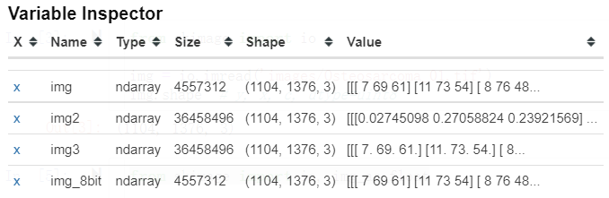
使用 OpenCV 读取图像
1 2 3 4 5 6 import cv2'images/Osteosarcoma_01.tif' ) 'images/Osteosarcoma_01.tif' , 0 ) 'images/Osteosarcoma_01.tif' , 1 )
OpenCV 默认使用 BGR 颜色空间, skimage 默认使用 RGB 颜色空间
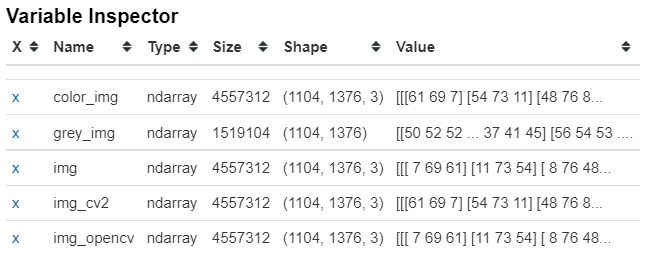
Tutorial 23 - Reading proprietary images in python
1 2 3 import tifffile'images/Osteosarcoma_01.tif' )
1 2 3 from skimage import io'images/Osteosarcoma_01.tif' , as_gray=False )
tif 还有 3D image 格式 和 Time series 格式
还可以读取 czi(显微镜图像格式) 格式 (Time series, scenes, channels, y, x, z, RGB)
好专业的图像格式…
1 2 3 4 5 6 7 0 , 0 , :, :, :, 0 ] 0 , :, :] 0 , :, :] 2 , :, :]
Tutorial 24 - Saving images from python to your local drive
skimage
1 2 3 from skimage import io'images/Osteosarcoma_01.tif' )
1 2 3 from skimage import filters3 )
1 io.imsave('images/exported/saved_using_skimage.jpg' , gaussian_img)
Lossy conversion from float64 to uint8. Range [0, 1]. Convert image to uint8 prior to saving to suppress this warning.
1 io.imsave('images/exported/saved_using_skimage.tif' , gaussian_img)
1 2 3 4 from skimage import img_as_ubyte'images/exported/saved_using_skimage_8bit.tif' , gaussian_img_8bit)
OpenCV
1 2 3 4 import cv2'images/exported/saved_using_opencv.jpg' , gaussian_img)
True
1 2 'images/exported/saved_using_opencv_8bit.jpg' , gaussian_img_8bit)
True
1 2 3 'images/exported/saved_using_opencv_8bit_RGB.jpg' , gaussian_img_8bit_RGB)
True
matplotlib
1 2 3 from matplotlib import pyplot as plt'images/exported/saved_using_pyplot.jpg' , gaussian_img)
tifffile
1 2 3 import tifffile'images/exported/saved_using_tifffile.tiff' , gaussian_img)
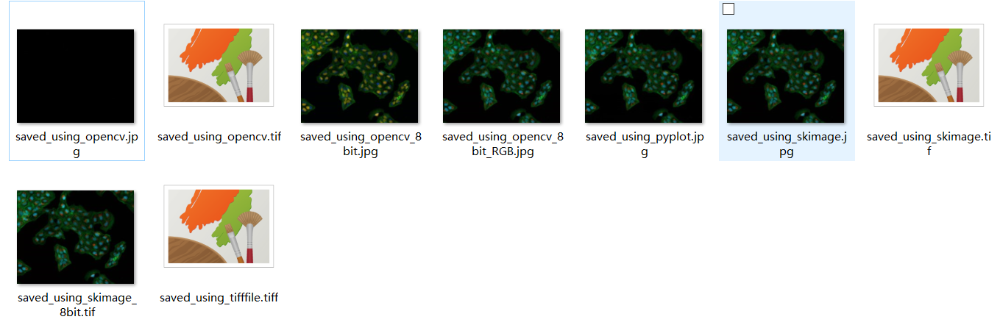
Tutorial 25 - Viewing 2d images in python
matplotlib
1 2 3 4 5 from skimage import io'images/Osteosarcoma_01.tif' )
<matplotlib.image.AxesImage at 0x1d668f31a08>
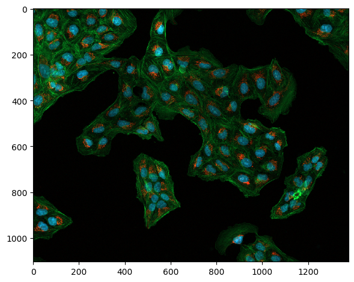
1 2 3 import matplotlib.pyplot as plt
<matplotlib.image.AxesImage at 0x1d66951bbc8>
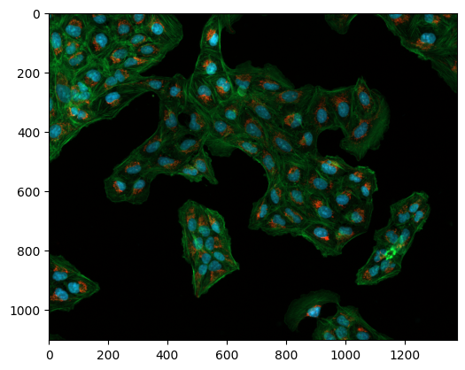
cmap: 用多种风格显示灰度图像:
pyplot cmap 颜色 - 知乎 (zhihu.com)
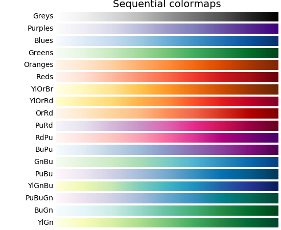
1 img_gray = io.imread('images/Osteosarcoma_01.tif' , as_gray=True )
1 plt.imshow(img_gray, cmap='hot' )
<matplotlib.image.AxesImage at 0x1d6698518c8>
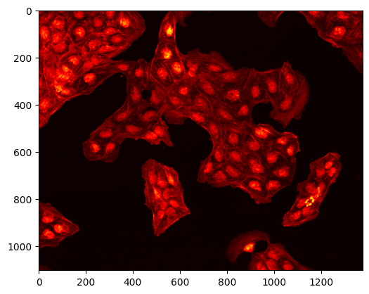
1 plt.imshow(img_gray, cmap='jet' )
<matplotlib.image.AxesImage at 0x1d6698c9948>
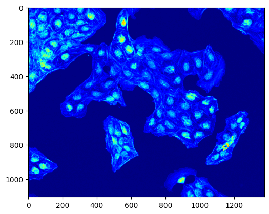
1 plt.imshow(img_gray, cmap='Blues' )
<matplotlib.image.AxesImage at 0x1d66b5018c8>
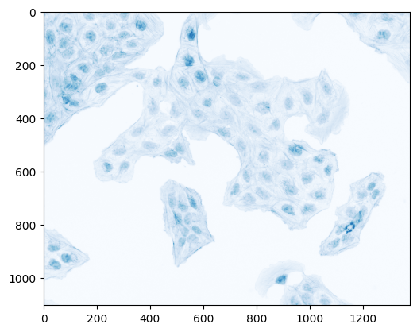
1 2 3 4 5 6 7 8 9 10 11 12 13 14 15 16 17 18 fig = plt.figure(figsize=(10 , 10 ))2 ,2 ,1 )'hot' )'1st' )2 ,2 ,2 )'jet' )'2nd' )2 ,2 ,3 )'gray' )'3rd' )2 ,2 ,4 )'nipy_spectral' )'4th' )
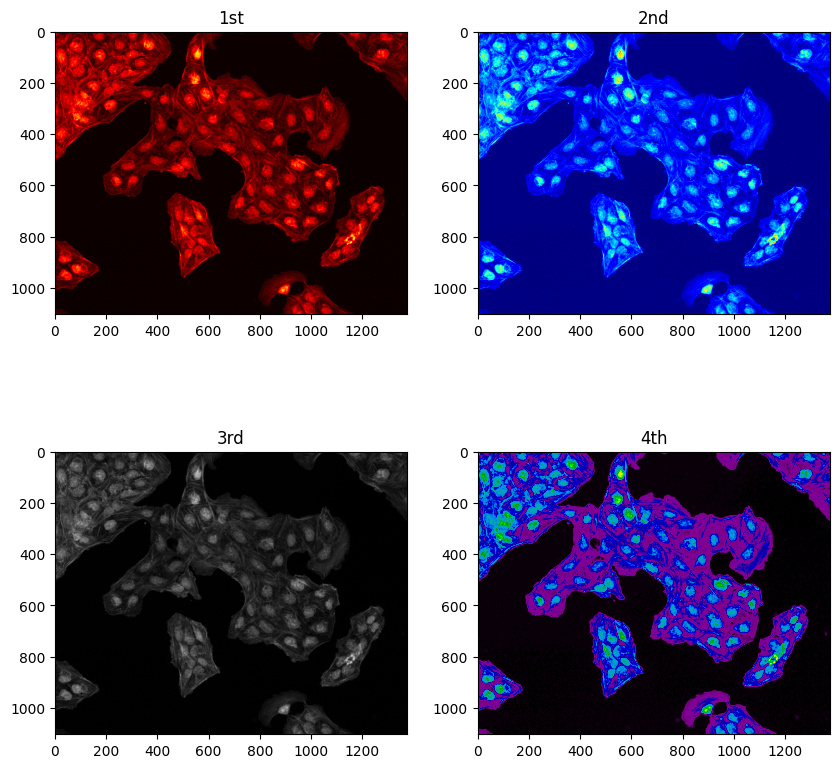
OpenCV
1 2 3 4 5 6 7 8 9 10 11 12 13 14 15 16 17 18 import cv2"images/Osteosarcoma_01.tif" , 0 )"images/Osteosarcoma_01.tif" , 1 )"pic from skimage import" , img) "color pic from opencv" , color_img)"gray pic from opencv" , gray_img)0 )
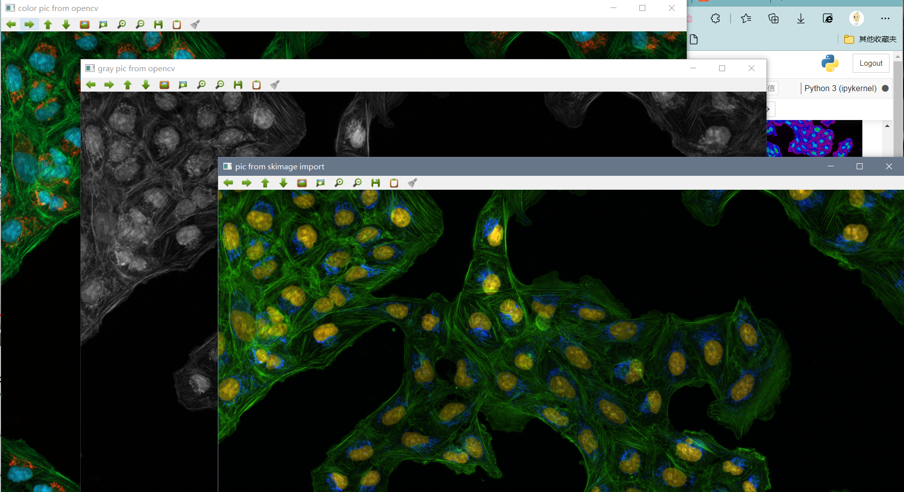
Tutorial 26 - Basic plotting in python using matplot.pyplot
教你怎么用 matplotlib 库
1 2 3 4 5 6 from matplotlib import pyplot as plt1 , 2 , 3 , 4 , 5 ]1 , 4 , 9 , 16 , 25 ]
[<matplotlib.lines.Line2D at 0x22168454048>]
1 2 3 4 5 import numpy as np
[<matplotlib.lines.Line2D at 0x22168e11148>]
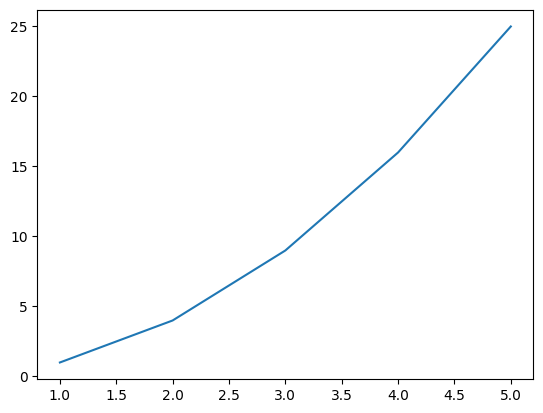
1 2 3 4 5 import cv2'images/sandstone.tif' , 0 )'gray' )
<matplotlib.image.AxesImage at 0x2216b0b5908>
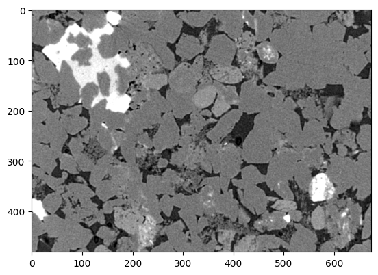
1 plt.hist(gray_img.flat, bins=100 , range =(0 , 150 ))
(array([ 544., 30., 99., 71., 122., 74., 183., 88.,
274., 170., 394., 253., 594., 341., 806., 507.,
1145., 626., 1431., 794., 1808., 1001., 2091., 1062.,
2303., 1184., 2352., 1178., 2271., 1113., 2083., 1021.,
1830., 803., 1568., 662., 1367., 680., 1320., 621.,
1218., 613., 1211., 608., 1206., 634., 1245., 614.,
1325., 686., 1397., 683., 1371., 715., 1390., 754.,
1493., 756., 1630., 828., 1763., 916., 1849., 975.,
2028., 1202., 2575., 1480., 3536., 2095., 5313., 3461.,
8307., 4992., 12007., 6800., 15600., 8629., 18104., 9210.,
18742., 9243., 17429., 8156., 14734., 6413., 11317., 4760.,
8432., 3439., 5933., 2508., 4391., 1920., 3222., 1417.,
2677., 1213., 2205., 1962.]),
array([ 0. , 1.5, 3. , 4.5, 6. , 7.5, 9. , 10.5, 12. ,
13.5, 15. , 16.5, 18. , 19.5, 21. , 22.5, 24. , 25.5,
27. , 28.5, 30. , 31.5, 33. , 34.5, 36. , 37.5, 39. ,
40.5, 42. , 43.5, 45. , 46.5, 48. , 49.5, 51. , 52.5,
54. , 55.5, 57. , 58.5, 60. , 61.5, 63. , 64.5, 66. ,
67.5, 69. , 70.5, 72. , 73.5, 75. , 76.5, 78. , 79.5,
81. , 82.5, 84. , 85.5, 87. , 88.5, 90. , 91.5, 93. ,
94.5, 96. , 97.5, 99. , 100.5, 102. , 103.5, 105. , 106.5,
108. , 109.5, 111. , 112.5, 114. , 115.5, 117. , 118.5, 120. ,
121.5, 123. , 124.5, 126. , 127.5, 129. , 130.5, 132. , 133.5,
135. , 136.5, 138. , 139.5, 141. , 142.5, 144. , 145.5, 147. ,
148.5, 150. ]),
<BarContainer object of 100 artists>)
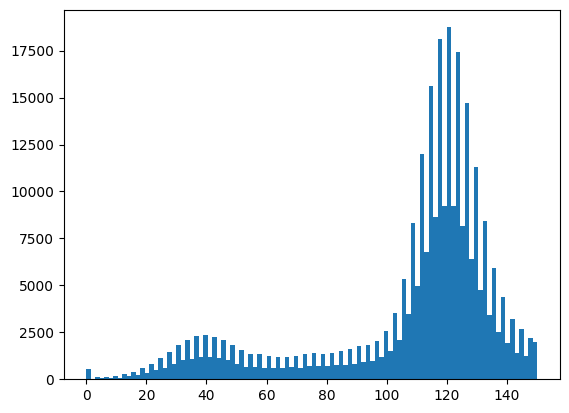
1 2 3 4 5 6 7 8 from matplotlib import pyplot as pltimport numpy as np1 , 2 , 3 , 4 , 5 ])1 , 4 , 9 , 16 , 25 ])'r--' )0 , 6 , 0 , 50 ])
(0.0, 6.0, 0.0, 50.0)
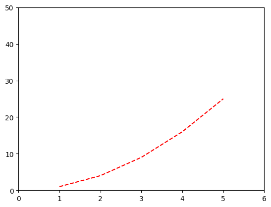
1 2 3 4 5 6 7 8 from matplotlib import pyplot as plt'well1' , 'well2' , 'well3' , 'well4' , 'well5' ]80 , 62 , 88 , 110 , 90 ]
[<matplotlib.lines.Line2D at 0x2216c346dc8>]
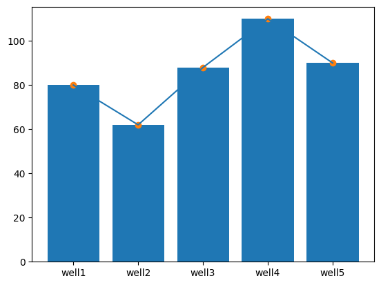
1 2 3 4 5 6 7 8 9 10 11 12 13 14 from matplotlib import pyplot as plt1 ,2 ,3 ,4 ,5 ]80 , 62 , 88 , 110 , 90 ]8 , 8 ))'Well #' , fontsize=18 , color='red' )'# dead cells' )'Dead cells in each well' )1 , 6 , 60 , 120 ]) True )
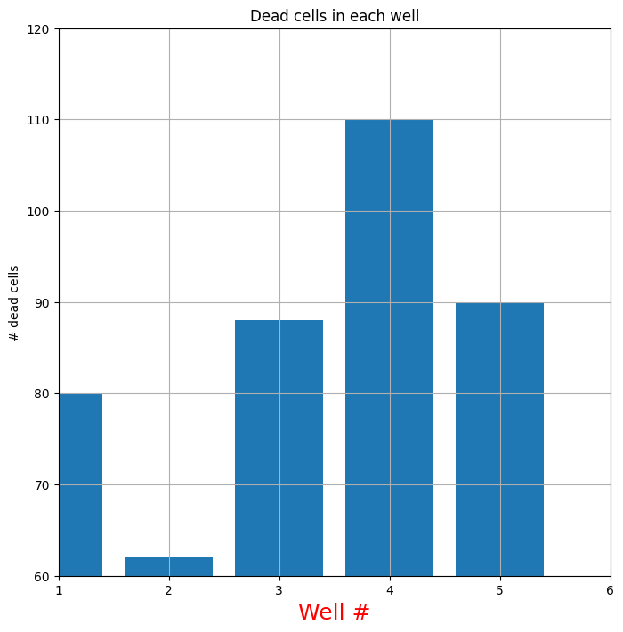
1 2 3 4 5 6 7 8 9 10 11 12 13 14 15 16 17 18 19 20 from matplotlib import pyplot as plt1 ,2 ,3 ,4 ,5 ]10 , 125 , 1350 , 11250 , 100500 ]12 , 6 ))121 )'linear' )'linear' )True )122 )'log' )'log' )True )
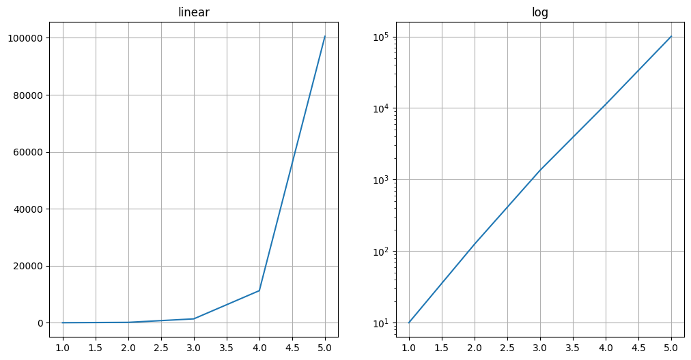
1 2 3 4 5 6 7 8 9 10 11 12 13 14 15 16 17 18 19 20 21 22 23 24 25 from matplotlib import pyplot as plt'well1' , 'well2' , 'well3' , 'well4' , 'well5' ]80 , 62 , 88 , 110 , 90 ]16 ,6 ))131 )set (title='vertical bar' , xlabel='Well #' , ylabel='# cells' )132 )set (title='horizontal bar' , xlabel='Well #' , ylabel='# cells' )133 )"images/my_plot.jpg" )
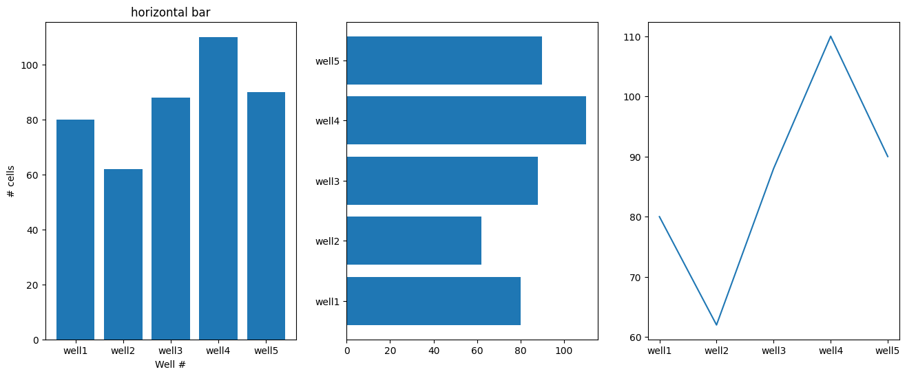
Tutorial 27 - Using glob to read multiple files in python
Python 模块之 glob 模块 - 知乎
使用 glob 遍历某个文件夹, 得到这个文件夹下面所有文件的名称
1 2 3 4 5 import cv2import glob'images/*.*' )
['images\\Alloy_gradient.jpg',
'images\\BSE.tif',
'images\\bubbles.tif',
'images\\cast_iron1.tif',
'images\\cast_iron2.jpg',
'images\\monalisa.jpg',
'images\\Osteosarcoma_01.tif',
'images\\Osteosarcoma_01_1sigma_blur.tif',
'images\\Osteosarcoma_01_25Sigma_noise.tif',
'images\\Osteosarcoma_01_2sigma_blur.tif',
'images\\Osteosarcoma_01_8bit.ome.tiff',
'images\\Osteosarcoma_01_8bit_salt_pepper.tif',
'images\\Osteosarcoma_01_8bit_salt_pepper_cropped.tif',
'images\\Osteosarcoma_01_small.tif',
'images\\Osteosarcoma_01_transl.tif',
'images\\Osteosarcoma_01_transl_rot.tif',
'images\\sandstone.tif',
'images\\sandstone_blur_2sigma.tif',
'images\\sandstone_low_contrast.tif',
'images\\scratch_time_series.tif',
'images\\synthetic.jpg',
'images\\Ti_powder.tif',
'images\\Ti_powder_single.tif']
1 2 3 4 5 6 my_list = []'images/*.*' for file in glob.glob(path):print (file)
images\Alloy_gradient.jpg
images\BSE.tif
images\bubbles.tif
images\cast_iron1.tif
images\cast_iron2.jpg
images\monalisa.jpg
images\Osteosarcoma_01.tif
images\Osteosarcoma_01_1sigma_blur.tif
images\Osteosarcoma_01_25Sigma_noise.tif
images\Osteosarcoma_01_2sigma_blur.tif
images\Osteosarcoma_01_8bit.ome.tiff
images\Osteosarcoma_01_8bit_salt_pepper.tif
images\Osteosarcoma_01_8bit_salt_pepper_cropped.tif
images\Osteosarcoma_01_small.tif
images\Osteosarcoma_01_transl.tif
images\Osteosarcoma_01_transl_rot.tif
images\sandstone.tif
images\sandstone_blur_2sigma.tif
images\sandstone_low_contrast.tif
images\scratch_time_series.tif
images\synthetic.jpg
images\Ti_powder.tif
images\Ti_powder_single.tif
Tutorial 28 - Using os.listdir to read multiple files
1 2 3 4 5 6 7 import os'images/' print (os.listdir(path))for image in os.listdir(path):print (image)
['Alloy_gradient.jpg', 'BSE.tif', 'bubbles.tif', 'cast_iron1.tif', 'cast_iron2.jpg', 'exported', 'monalisa.jpg', 'Osteosarcoma_01.tif', 'Osteosarcoma_01_1sigma_blur.tif', 'Osteosarcoma_01_25Sigma_noise.tif', 'Osteosarcoma_01_2sigma_blur.tif', 'Osteosarcoma_01_8bit.ome.tiff', 'Osteosarcoma_01_8bit_salt_pepper.tif', 'Osteosarcoma_01_8bit_salt_pepper_cropped.tif', 'Osteosarcoma_01_small.tif', 'Osteosarcoma_01_transl.tif', 'Osteosarcoma_01_transl_rot.tif', 'sandstone.tif', 'sandstone_blur_2sigma.tif', 'sandstone_low_contrast.tif', 'scratch_time_series.tif', 'synthetic.jpg', 'Ti_powder.tif', 'Ti_powder_single.tif']
Alloy_gradient.jpg
BSE.tif
bubbles.tif
cast_iron1.tif
cast_iron2.jpg
exported
monalisa.jpg
Osteosarcoma_01.tif
Osteosarcoma_01_1sigma_blur.tif
Osteosarcoma_01_25Sigma_noise.tif
Osteosarcoma_01_2sigma_blur.tif
Osteosarcoma_01_8bit.ome.tiff
Osteosarcoma_01_8bit_salt_pepper.tif
Osteosarcoma_01_8bit_salt_pepper_cropped.tif
Osteosarcoma_01_small.tif
Osteosarcoma_01_transl.tif
Osteosarcoma_01_transl_rot.tif
sandstone.tif
sandstone_blur_2sigma.tif
sandstone_low_contrast.tif
scratch_time_series.tif
synthetic.jpg
Ti_powder.tif
Ti_powder_single.tif
1 2 3 4 5 6 7 8 9 10 11 import osprint (os.walk('.' )) for root, dirs, files in os.walk('.' ):for f in files:print (os.path.join(root, f))
<generator object walk at 0x000001AAF06408C8>
.\4.ipynb
.\Untitled.ipynb
.\Untitled1.ipynb
.\Untitled2.ipynb
.\Untitled3.ipynb
.\Untitled4.ipynb
.\Untitled5.ipynb
.\Untitled6.ipynb
.\Untitled7.ipynb
.\Untitled8.ipynb
.\Untitled9.ipynb
.\.ipynb_checkpoints\4-checkpoint.ipynb
.\.ipynb_checkpoints\Untitled-checkpoint.ipynb
.\.ipynb_checkpoints\Untitled1-checkpoint.ipynb
.\.ipynb_checkpoints\Untitled2-checkpoint.ipynb
.\.ipynb_checkpoints\Untitled3-checkpoint.ipynb
.\.ipynb_checkpoints\Untitled4-checkpoint.ipynb
.\.ipynb_checkpoints\Untitled5-checkpoint.ipynb
.\.ipynb_checkpoints\Untitled6-checkpoint.ipynb
.\.ipynb_checkpoints\Untitled7-checkpoint.ipynb
.\.ipynb_checkpoints\Untitled8-checkpoint.ipynb
.\.ipynb_checkpoints\Untitled9-checkpoint.ipynb
.\images\Alloy_gradient.jpg
.\images\BSE.tif
.\images\bubbles.tif
.\images\cast_iron1.tif
.\images\cast_iron2.jpg
.\images\monalisa.jpg
.\images\Osteosarcoma_01.tif
.\images\Osteosarcoma_01_1sigma_blur.tif
.\images\Osteosarcoma_01_25Sigma_noise.tif
.\images\Osteosarcoma_01_2sigma_blur.tif
.\images\Osteosarcoma_01_8bit.ome.tiff
.\images\Osteosarcoma_01_8bit_salt_pepper.tif
.\images\Osteosarcoma_01_8bit_salt_pepper_cropped.tif
.\images\Osteosarcoma_01_small.tif
.\images\Osteosarcoma_01_transl.tif
.\images\Osteosarcoma_01_transl_rot.tif
.\images\sandstone.tif
.\images\sandstone_blur_2sigma.tif
.\images\sandstone_low_contrast.tif
.\images\scratch_time_series.tif
.\images\synthetic.jpg
.\images\Ti_powder.tif
.\images\Ti_powder_single.tif
.\images\exported\saved_using_opencv.jpg
.\images\exported\saved_using_opencv.tif
.\images\exported\saved_using_opencv_8bit.jpg
.\images\exported\saved_using_opencv_8bit_RGB.jpg
.\images\exported\saved_using_pyplot.jpg
.\images\exported\saved_using_skimage.jpg
.\images\exported\saved_using_skimage.tif
.\images\exported\saved_using_skimage_8bit.tif
.\images\exported\saved_using_tifffile.tiff
1 2 3 4 5 6 7 8 9 10 11 import osprint (os.walk('.' )) for root, dirs, files in os.walk('.' ):for d in dirs:print (os.path.join(root, d))
<generator object walk at 0x000001AAF06406C8>
.\.ipynb_checkpoints
.\images
.\images\exported